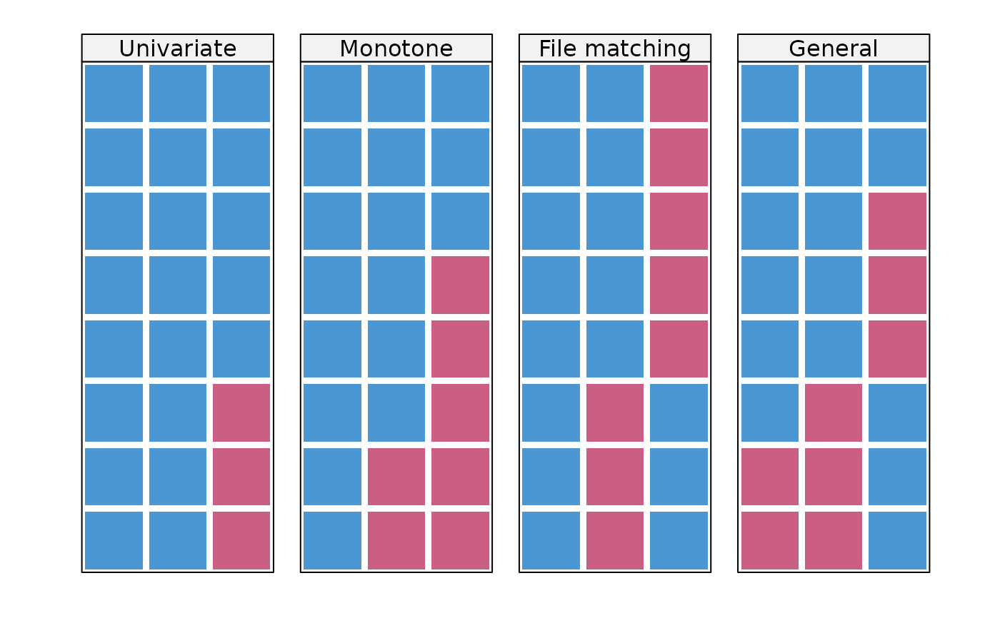
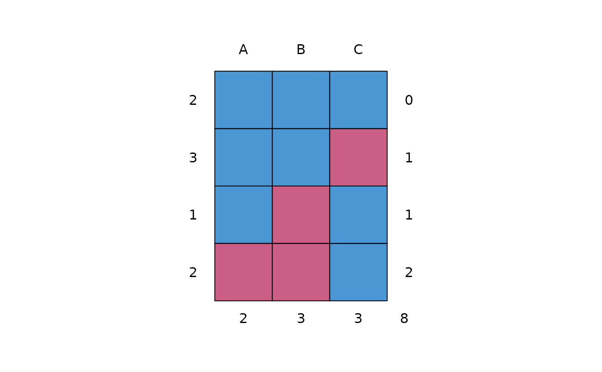

Four simple datasets with various missing data patterns
Format
- list("pattern1")
Data with a univariate missing data pattern
- list("pattern2")
Data with a monotone missing data pattern
- list("pattern3")
Data with a file matching missing data pattern
- list("pattern4")
Data with a general missing data pattern
Van Buuren, S. (2018). Flexible Imputation of Missing Data. Second Edition. Chapman & Hall/CRC. Boca Raton, FL.
Details
Van Buuren (2012) uses these four artificial datasets to illustrate various missing data patterns.
Examples
pattern4
#> A B C
#> 25 26 88 32
#> 26 42 66 21
#> 27 86 54 NA
#> 28 9 92 NA
#> 29 20 83 NA
#> 30 89 NA 41
#> 31 NA NA 35
#> 32 NA NA 33
data <- rbind(pattern1, pattern2, pattern3, pattern4)
mdpat <- cbind(expand.grid(rec = 8:1, pat = 1:4, var = 1:3), r = as.numeric(as.vector(is.na(data))))
types <- c("Univariate", "Monotone", "File matching", "General")
tp41 <- lattice::levelplot(r ~ var + rec | as.factor(pat),
data = mdpat,
as.table = TRUE, aspect = "iso",
shrink = c(0.9),
col.regions = mdc(1:2),
colorkey = FALSE,
scales = list(draw = FALSE),
xlab = "", ylab = "",
between = list(x = 1, y = 0),
strip = lattice::strip.custom(
bg = "grey95", style = 1,
factor.levels = types
)
)
print(tp41)

md.pattern(pattern4)

#> A B C
#> 2 1 1 1 0
#> 3 1 1 0 1
#> 1 1 0 1 1
#> 2 0 0 1 2
#> 2 3 3 8
p <- md.pairs(pattern4)
p
#> $rr
#> A B C
#> A 6 5 3
#> B 5 5 2
#> C 3 2 5
#>
#> $rm
#> A B C
#> A 0 1 3
#> B 0 0 3
#> C 2 3 0
#>
#> $mr
#> A B C
#> A 0 0 2
#> B 1 0 3
#> C 3 3 0
#>
#> $mm
#> A B C
#> A 2 2 0
#> B 2 3 0
#> C 0 0 3
#>
### proportion of usable cases
p$mr / (p$mr + p$mm)
#> A B C
#> A 0.0000000 0 1
#> B 0.3333333 0 1
#> C 1.0000000 1 0
### outbound statistics
p$rm / (p$rm + p$rr)
#> A B C
#> A 0.0 0.1666667 0.5
#> B 0.0 0.0000000 0.6
#> C 0.4 0.6000000 0.0
fluxplot(pattern2)